This is where I archive ideas, works, or projects large and small I've been part of making over the years.
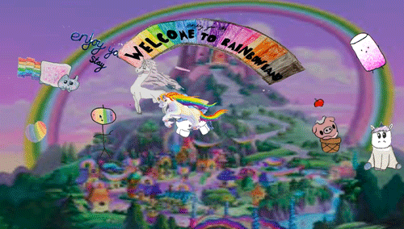
Narrow Corridors
Learning X designing (2020)
AR Games
Augementing spaces (2018)
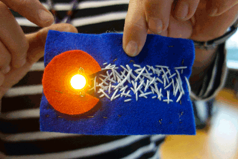
Maker Summit
E-textiles for teachers (2018)
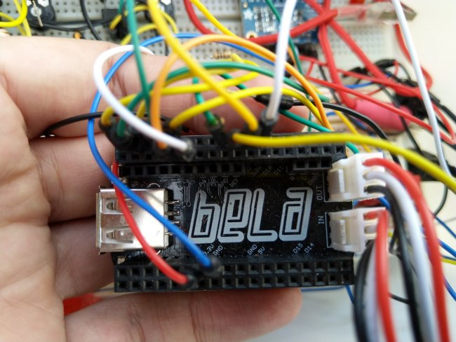
Embelashed
Tactile sensors for electronic music (2018)
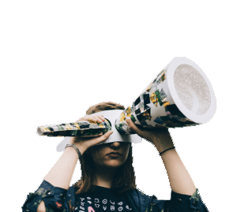
Hardware Hacking
Materiality of hardware (2018)
Bio-fashion
Expanding the senses with wearables (2017)
Figuring
Expanding the senses with wearables (2017)

Pervasive Media
Locative Storytelling (2017)

Knotting~Works
Taxonamy of knots and knot-making (2016)
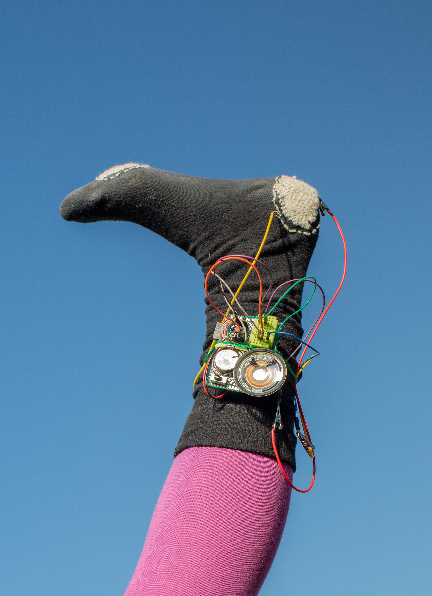
Worn Translucent in Places
Darning and mending sensors (2016)
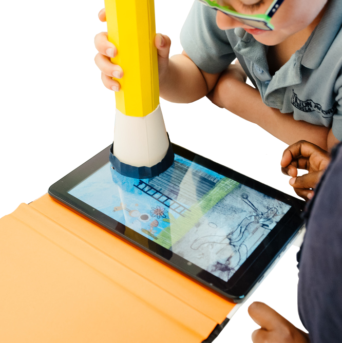
Bear Abouts
Paper sensors for digital storytelling (2016)
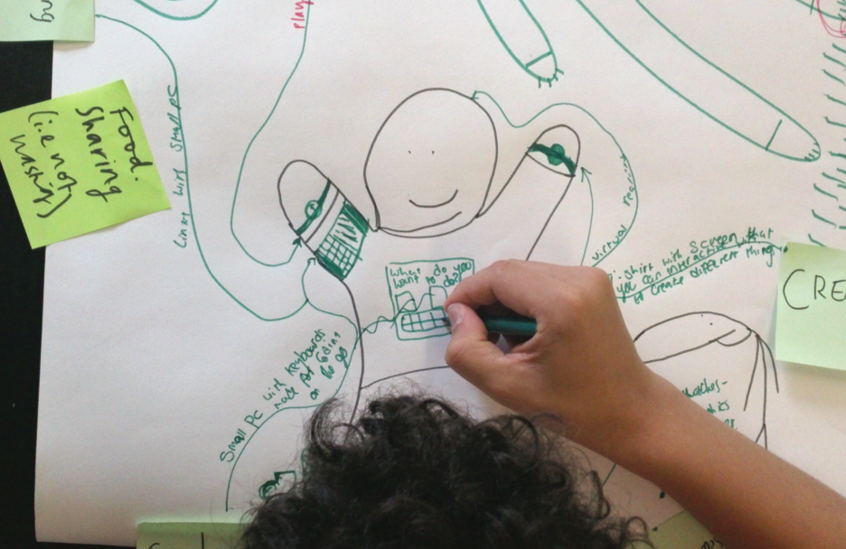
Human Breadboards
Prototyping wearable sensors (2015)
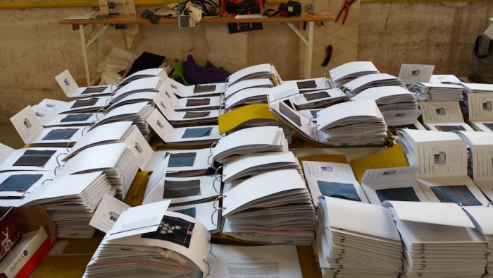
Tactile knowledge sharing (2015)
Etextile Swatch Exchange
Tactile knowledge sharing (2015)
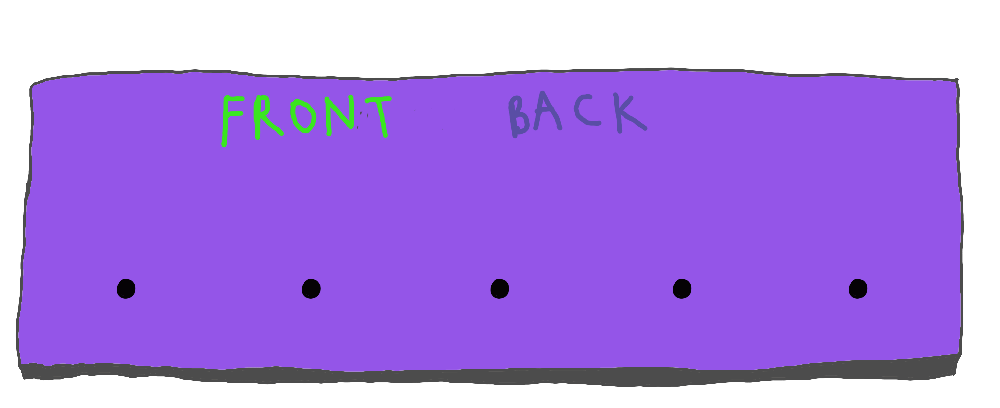
Graph theory and book-binding (2015)
Stab binding designer
Graph theory and book-binding (2015)

Net Bestiary
Pet meme zines (2015)

E-luminated books
Paper electronics (2014)
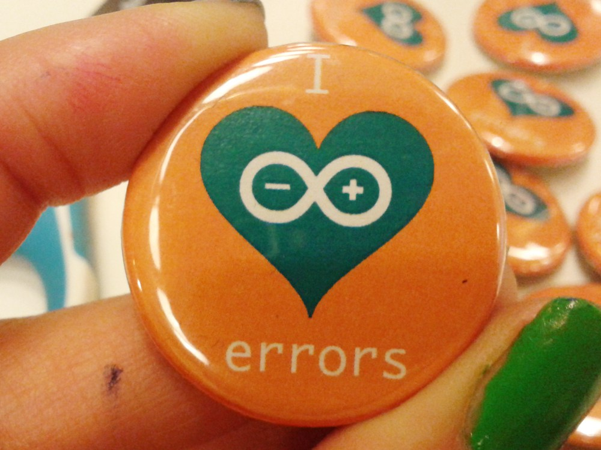
Arduino Error Bingo
Celebrating coding failures (2014)
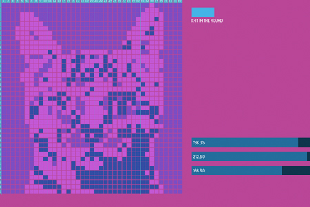
Bitknit
5 needle knitting app (2014)
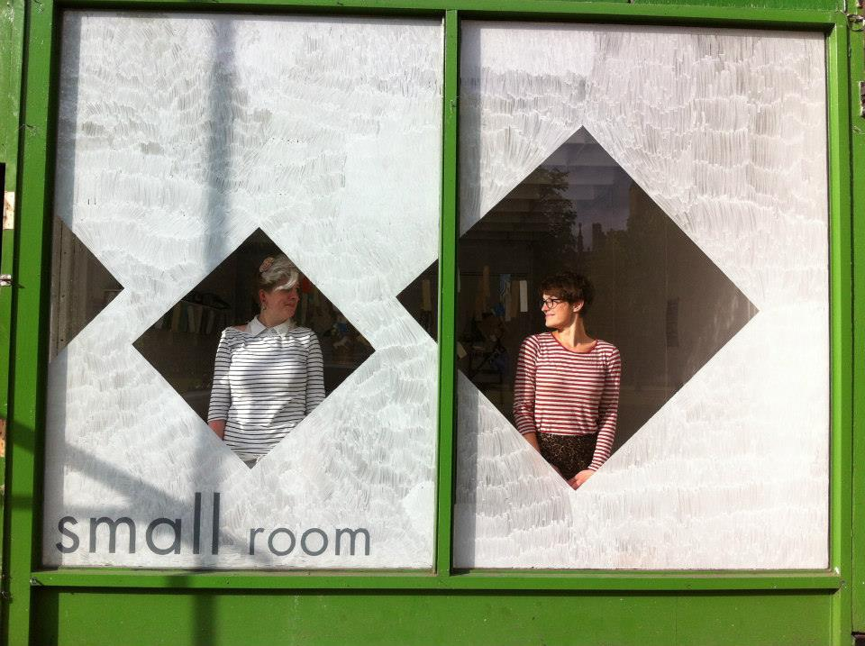
Storybooth
Drawing dreams (2013)
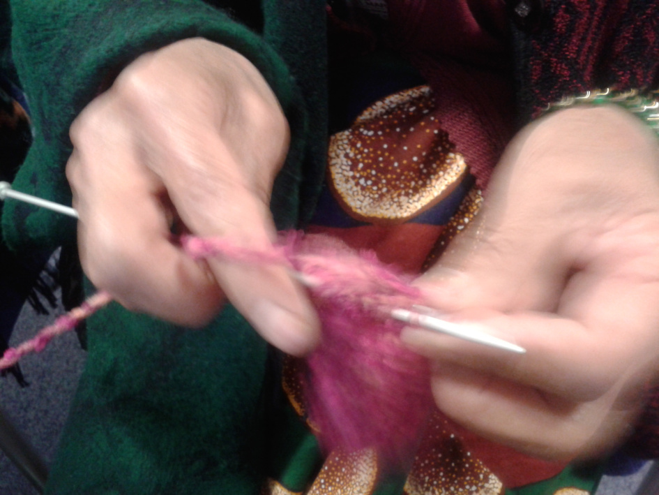
Craft Connects
Craft in libraries (2013)
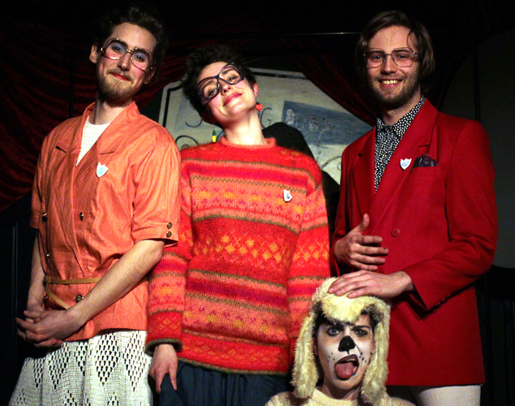
The Improvised Puppetry Extravaganza
Short-form shadow puppetry improv (2012)
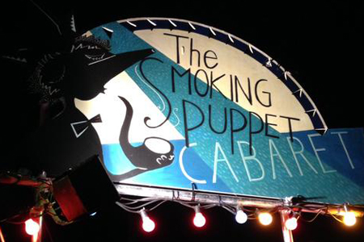
Smoking Puppet Cabaret
Live performance night (2011)
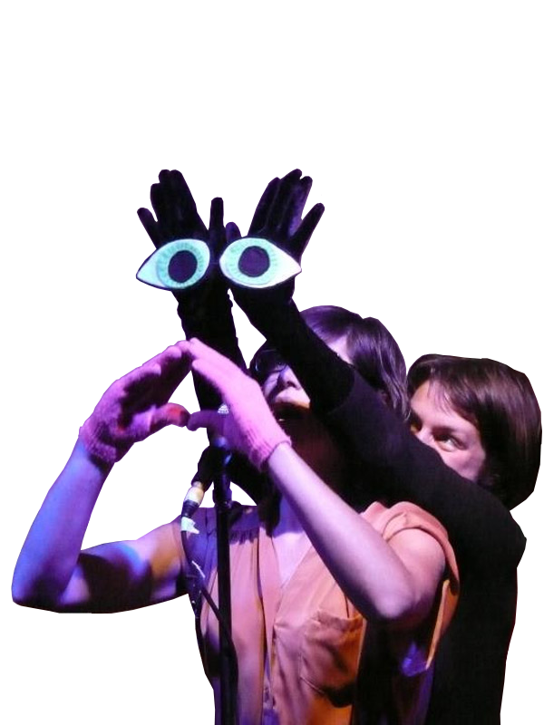
Gongoozler
Puppetry collective (2010)
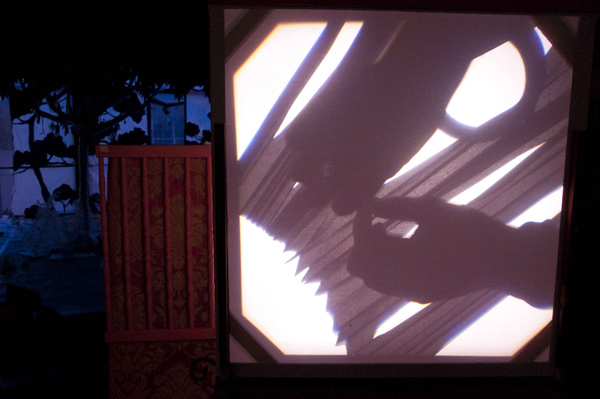